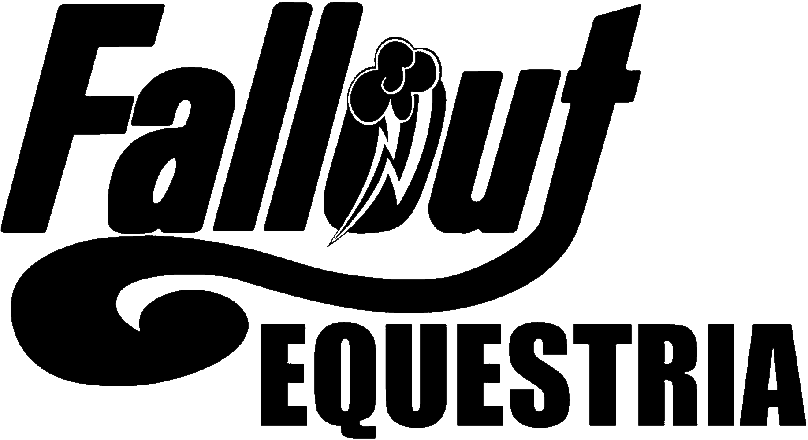

輻射小馬國
序幕
很久很久以前，在小馬國這片神奇的土地上……
......曾有一個時代，當時友誼的理想屈服於貪婪、自私和偏執；出於嫉妒，當時的生靈彼此掠奪日益減少的生存空間和自然資源。各國開始與鄰居兵戎相見。世界末日的降臨大致和我們預料的一樣——整個世界陷入了充滿野火與黑魔法的深淵之中。其中的細節瑣碎又毫無意義。原因，一如既往，全歸咎於我們自己。世間的生命幾乎被抹滅殆盡。由小馬蹄下擊打而出的魔法火花以燎原之勢迅速失控，如同一場大清洗。超聚魔法(Megaspells)如雨點般從天而降。整片大地都被烈焰所吞噬，又被沸騰翻湧的海洋所淹沒。小馬一族幾近滅絕，而他們的幽魂與覆蓋在大地之上的輻射融為一體。一片寂靜的黑暗籠罩世界……
......然而，這和某些小馬預想的世界末日不同。相反，這場大災變(Apocalypse)僅僅是小馬歷史上另一個血腥篇章的序幕。在早期，數以千計的小馬藏身於名為避難廄(Stable)的巨大地下避難所，讓他們免受大屠殺的威脅。但當他們出來後，迎接他們的只有充滿廢墟的地獄。而二號避難廄的小馬卻是唯一的例外。在那命運攸關之日，當魔法火焰如雨點般從天而降時，二號避難廄的鋼鐵巨門搖晃著關上，至今不曾再次開啟。
